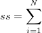
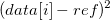

The ss function returns the sum of the square of individual values in vd minus some reference value. The function ss is defined by the following equation:

//If ref is a constant double sumSquares = ss(dataset vd[, double ref]); //If ref is a vector double sumSquares = ss(dataset vd[, dataset ref]); //If ref is a function double sumSquares = ss(dataset vd[, string ref]);
vd
ref
Returns the sum of the square of individual values in vd minus some reference value.
// Calculates the mean-subtracted sum of squares: double sumSq = ss(dataset);
// Calculates the sum of squares, after subtracting 4 from each member // of 'dataset': double sumSq = ss(dataset,4);
// Calculates the sum of squares, subtracting each corresponding member // of 'dataset2' from 'dataset1': double sumSq = ss(dataset1,dataset2);
ref is an expression involving x or i, where x is the X-value corresponding to each element in dataset (assumed to be Y-values), and i is the corresponding row number for each element in dataset.
double AA = 1; double BB = 2; // Calculates the sum of squares, subtracting the line described by 1+2x: double sumSq = ss(dataset, AA+BB*x);